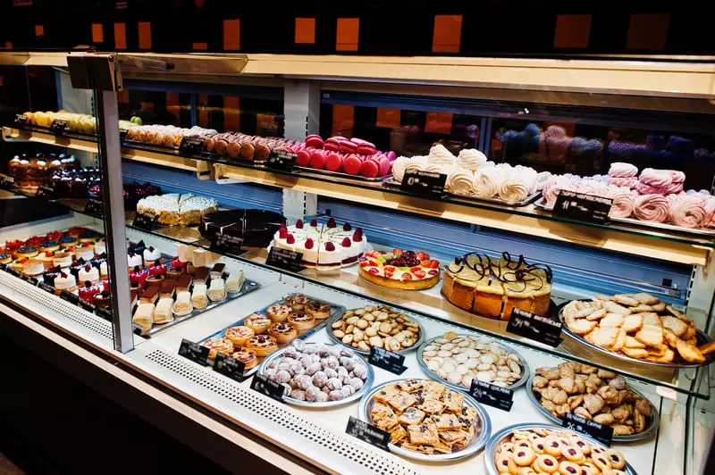
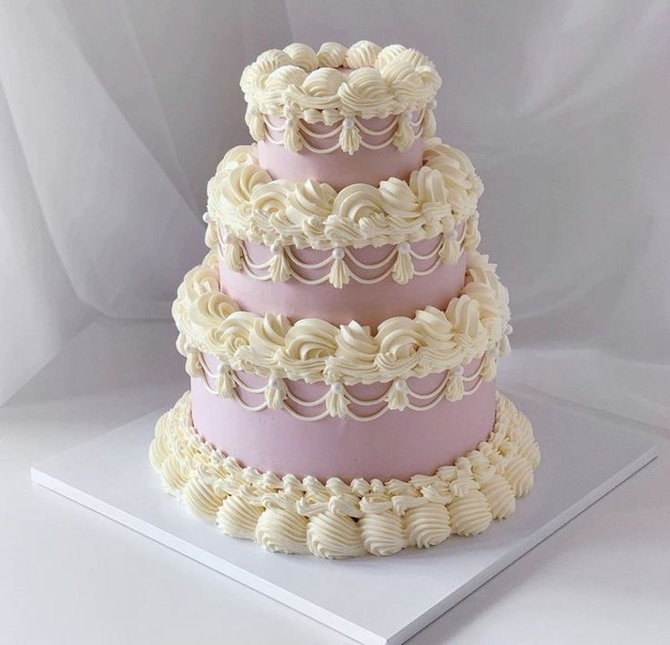
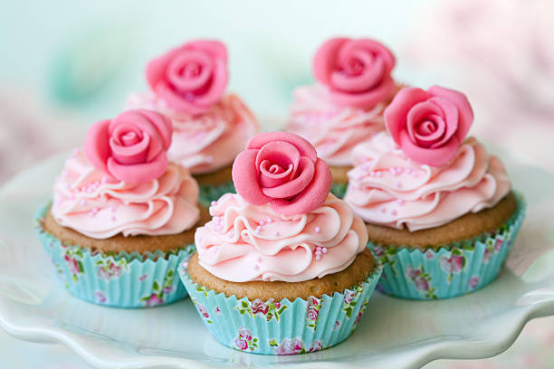
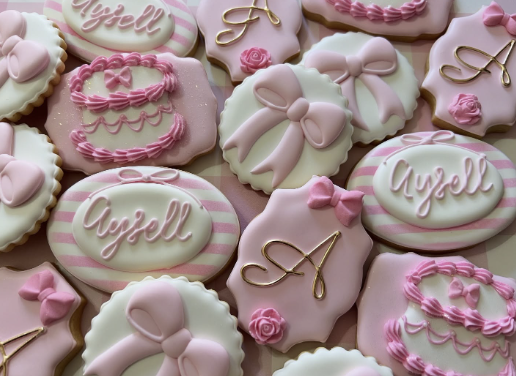

Pastelería artesanal · Pedidos personalizados · Ingredientes frescos
Algunos productos destacados. Visita la página de productos para más detalles.

Torta de 3 niveles con decoración personalizada.

Pack de 5 cupcakes con frosting artesanal y toppers.

Galletas personalizadas para eventos y recuerdos.